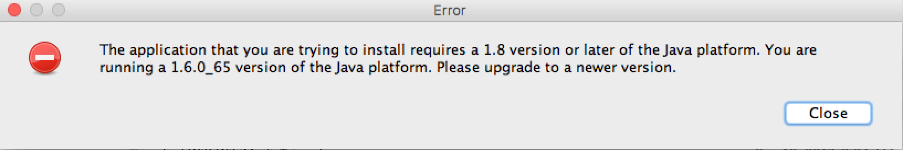

The application that you are trying to install requires a 1.8 version or later of the Java platform. You are
running a 1.6.0_65 version of the Java platform. Please upgrade to a new version.
that looks like:

then the problem is that you don't have a Java 1.8 JDK or JRE installed. See below for information about which Java to install.
If you do have Java 1.8 installed, then the problem could be that Java 1.6 was previously installed. See Mac: app requires Java 1.8, which is not found even though it is installed.
The workaround is to execute the installer by hand:
bash-3.2$ cd ~/Downloads/capecode0.1.devel.setup.mac.app/Contents/Resources/Java bash-3.2$ ls capecode0.1.devel.setup.mac.jar bash-3.2$ java -version java version "1.8.0_152" Java(TM) SE Runtime Environment (build 1.8.0_152-b16) Java HotSpot(TM) 64-Bit Server VM (build 25.152-b16, mixed mode) bash-3.2$ java -jar capecode0.1.devel.setup.mac.jar Command line arguments: ...
Ptolemy II requires Java, which may be downloaded from Oracle. We suggest installing the JDK, see http://www.oracle.com/technetwork/java/javase/downloads/index.html. Note that recent versions of Mac OS X may prompt you to install the JDK if it is not yet installed.
The Ptolemy installer for Mac will install a version of Ptolemy with a JRE that includes:
The installer requires that a Java 1.8 Java Runtime Environment (JRE) be installed.
Note that some demos, such as the hlacerti demos, require certain environment variables to be set. If, under Mac OS, Vergil is invoked by clicking on Vergil.app, then these environment variables will not be set. The workaround is to invoke Vergil using $PTII/bin/vergil. See #329: Under macOS, Vergil.app does not set environment variables needed for hlacerti demos.
This page covers installing Ptolemy II via a traditional Windows Installer
Other formats include: